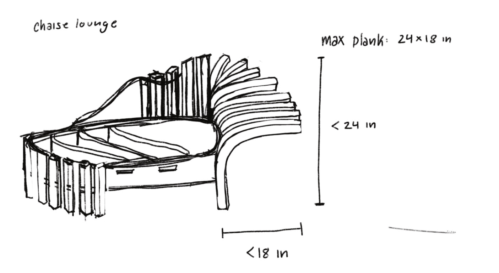
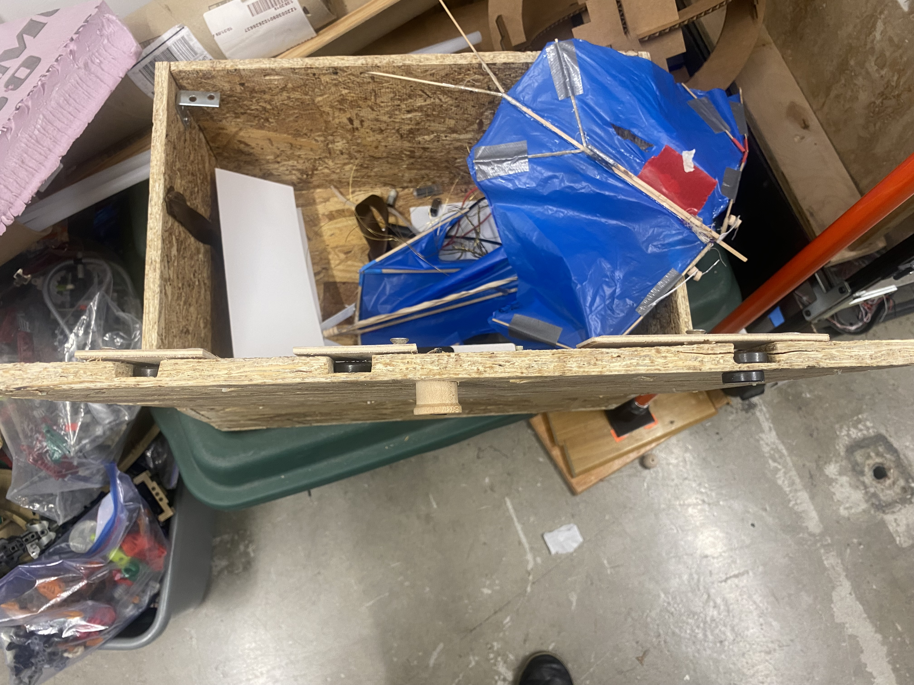
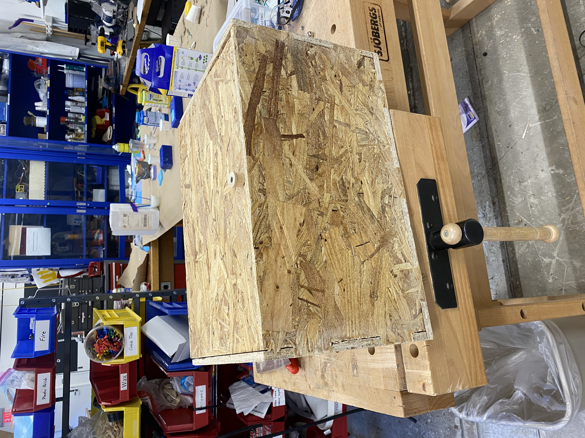
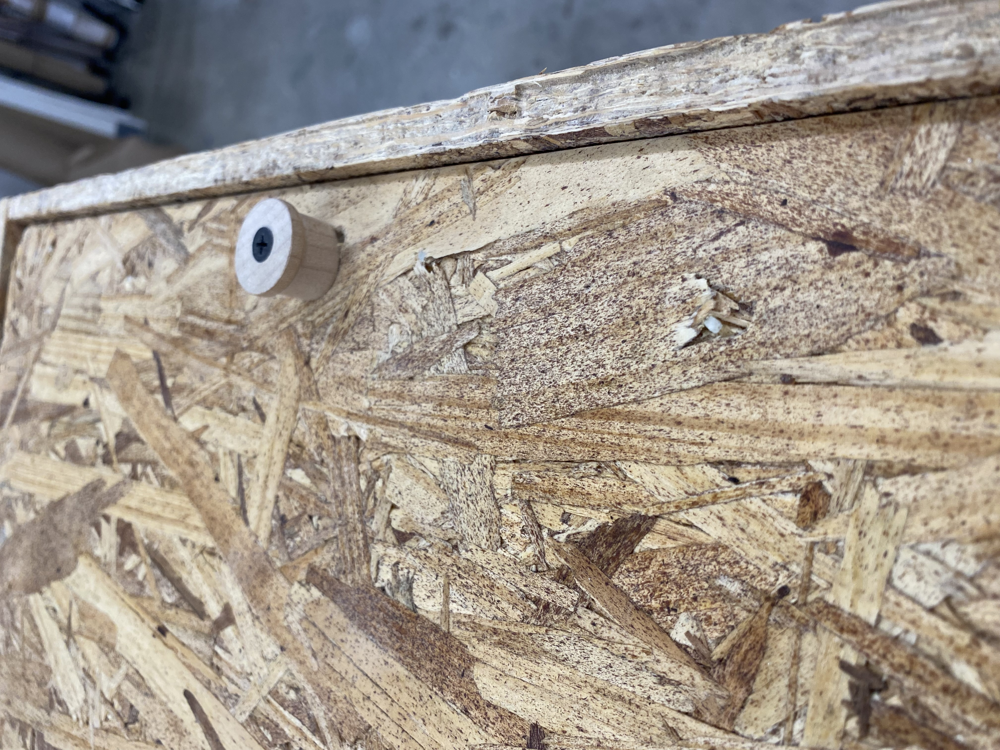
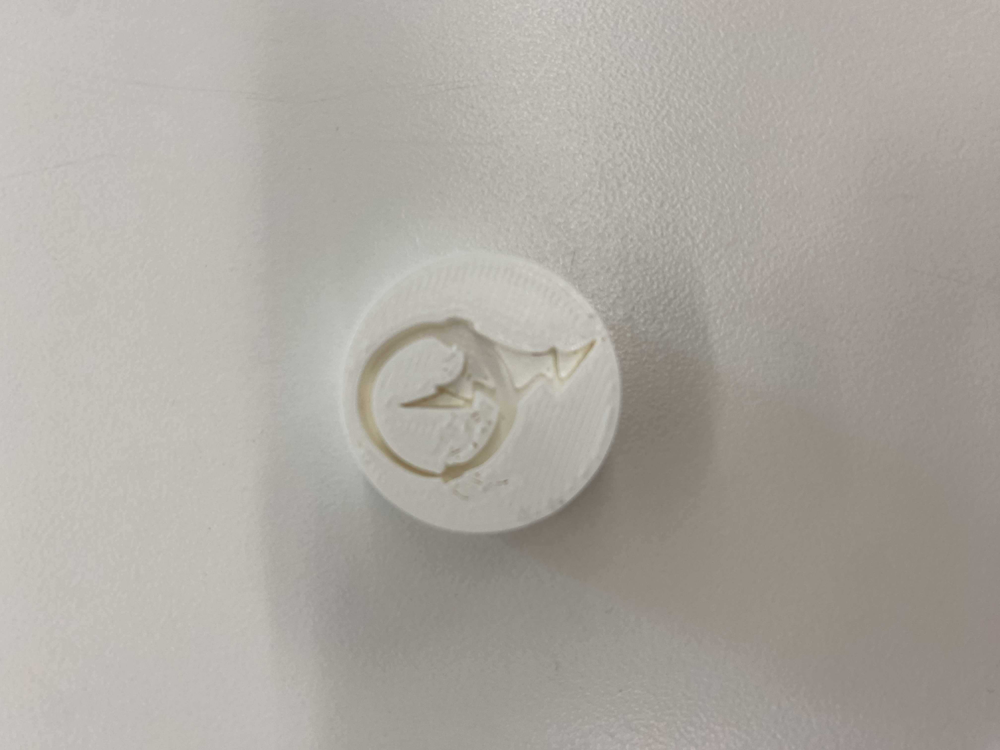

### CNC
## Concept & Inspiration
I have been looking for a lockable chest in which I might keep my journals for a while now, so when this assignment came up I thought I might as well take the opportunity to make myself something useful. Well, technically, my first thought was to make myself a chaise lounge, but I decided the scale limit and sheer number of pieces I would need would make it more trouble than it was worth. So, instead, a box. (still including the sketch of the chaise lounge though because it is a good sketch)

## Design Process
My first order of business with this project was to design sides of a box which would fit together. I had a fairly straightforward design for each side--the only complication would be the locking mechanism on top.
Originally I thought I might have a sliding top with multiple pieces that would have to fit together in order to be removed. I ended up deciding that that would be too complicated and not worth the effort. I also decided I wanted to play around with magnets. My simplified design incorporated a hinged lid with slots aligning with slots on the side of the box. In order to lock the box, I would use a magnet to move magnets to sit between the lid of the box and the grooves in the sides, keeping the whole thing from being opened. The placement of the magnetic locks is random, but you can find them by dropping a magnet on the lid of the box. To open the box, you use a magnet to move the locking magnets fully into the lid.
<img class="three" src="./process.jpeg">

## Results
My locking box ended up being a success. Although I messed up the alignment a little bit, the locks at the front of the box worked well, and my design is modular enough that I could easily reprint the other two sides if I chose to.


### Molding & Casting
## Concept & Inspiration
I really enjoy giving my friends letters and notes, and I like to use wax seals to seal and decorate them. I have two seals at present, one with an 'A' and one with a heart, so I decided to make a third which was customized to me. I've recently been doodling a dragon ouroboros design that I really like, so I decided to make that my seal.
## Design Process
I uploaded my drawign to fusion and set it as the canvas for a sketch, then traced over the outline using the spline tool. I set the pattern into a short cylinder and 3D printed it before using the print to create a silicone mold. I cast the final seal in plaster, though I think in future I would redo it with metal, perhaps in the shape of a ring (I've always wanted a signet ring).
